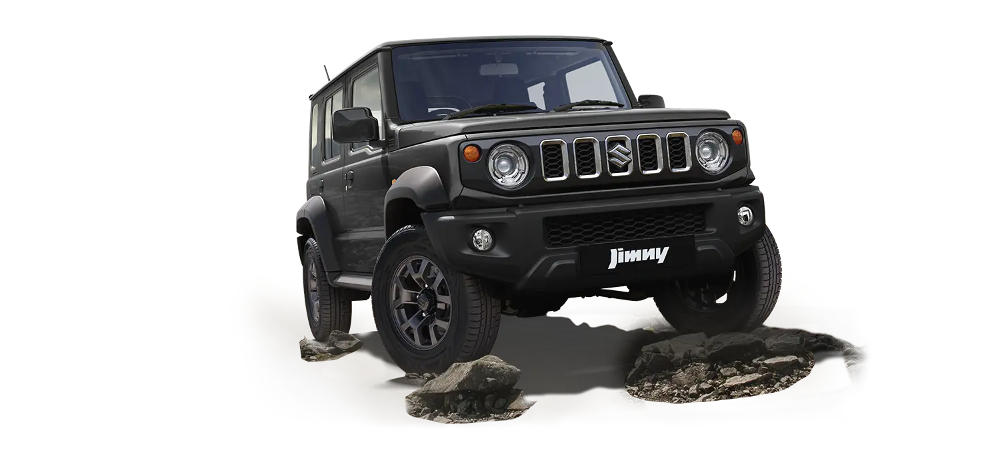

TALES FROM THE TRAILS
Sometimes there are no roads to where you
need to go. No maps for where you need to be.
On such paths is where you often hear the tales
of the Jimny. Tales that have been passed down
from generation to generation since 1970. Tales
of overcoming insurmountable odds. Tales of
resilience. Tales of the ones who wouldn’t stop,
wouldn’t turn back, and their Jimny.
These are the tales that have inspired each
generation of the Jimny to venture deeper, climb
higher and go further than ever before. In its all
new 5-door avatar, the Jimny takes this driving
experience to an all-new level.

.webp)
JIMNY – DESIGNED FOR PURITY OF FUNCTION
ability to power through the roughest terrains is embedded in the Jimny’s DNA.
Its simplicity has been instrumental in driving people to the extraordinary and back.
With stories that have become legends over time.
.webp)
Clamshell Bonnet
Be ready for every twist in the trail.
Get a wide-angle view of what lies ahead with the
Jimny's upright A-pillars and a flat clamshell bonnet structure
Intuitively Designed Controls
Add a thrilling background score while navigating that hairpin bend.
The Jimny's dials and touch-screen controls are designed for easy operation
Practical Drip Rail
Finding the perfect ending to your adventure could take days. The Jimny's drip rail,
running along the side and rear edges, lets you install roof carriers flexibly,
while keeping your head dry when entering and exiting the vehicle.
Alloy
While donning the hat of an off-roader, you want to get in character.
The Jimny's bold gun-metal alloys and robust design give it the rugged look,
making you feel one with the terrain.
HILL HOLD ASSIST
Climb like a mountain goat on the steepest roads
HILL DESCENT CONTROL
Take control with the push of a button
BRAKE LSD
Be the unstoppable force on the most stubborn terrain
6 AIRBAGS
The thrill of the ride is only possible with safety on your side
.webp)
.webp)
SAFETY
Your Safety Harness For Every Terrain


PERFORMANCE
Off-Road Performance, To Conquer Any Fear
ALLGRIP PRO
Chase every off-roading dream - no matter how far-fetched.
The Jimny’s proven 4x4 technology with low-range
transfer gear gives you max torque and traction to conquer the toughest terrain.
Ladder Frame Chassis
The stories you seek are not for the fainthearted.
The Jimny's ladder frame structure provides the torsional rigidity required to
overcome and conquer the most difficult terrain.
3-Link Rigid Axle Suspension with Coil Spring
Don't lose the plot even on the deceptively slippery terrain.
The Jimny's 3-link rigid axle suspension ensures increased tyre contact with the surface.
So you always stand your ground.
Engine Performance
All set to unlock a new level of off-roading? The Jimny’s 1.5L K15B engine,
with its wide RPM range, is designed for unstoppable performance.
Ample Body Angles and Clearance
Defy the odds and take outdoor exploration to a whole new degree.
With the Jimny’s ample departure and approach angles,
the harshest of terrains will bow before you.